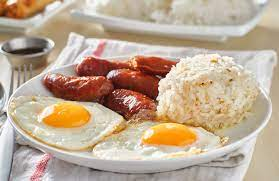

Filipino Silog Recipes

Fried garlic rice with eggs and longganisa.
Ingredients
- 1/2 lb. skinless Longganisa
- 2 pieces eggs
- 4 cups rice leftover
- 5 cloves garlic crushed
- 1/2 cup water
- 4 tablespoons cooking oil
- Salt and ground black pepper to taste
Instructions
- Heat 2 tablespoons of oil in a pan. Once the oil gets hot, fry the eggs. Remove from the pan. Set aside.
- Add remaining oil in the pan. Fry the longanisa until the outer part turns light brown (around 1 1/2 minutes).
- Pour-in water. Let boil. Continue boiling until the water evaporates. Fry the longanisa in remaining oil until fully cooked. Remove from the pan and set aside.
- Using the remaining oil, cook garlic until it starts to turn light brown.
- Add rice. Stir-fry for 3 minutes. Season with salt and ground black pepper.
- Assemble the fried eggs, longanisa, and sinangag on a plate. Serve with spicy vinegar as a dipping sauce for the longanisa.
- Share and enjoy!
Other Recipes